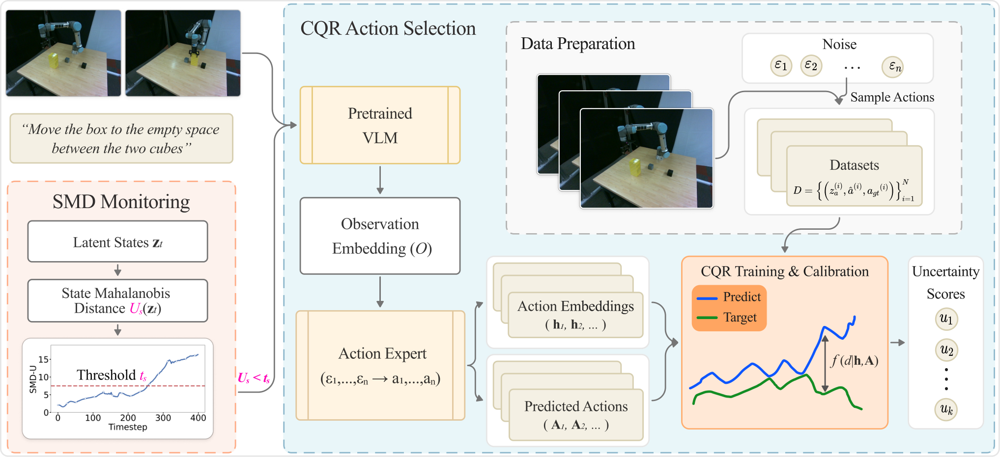

SentryVLA: Uncertainty-Guided Action Selection and State Monitoring for Vision-Language-Action Robotic Control
Accepted at the 10th Conference on Robot Learning (CoRL), 2026
A lightweight runtime reliability wrapper for frozen VLA policies. SentryVLA uses conformalized quantile regression to rank stochastic action candidates by their calibrated deviation from expert-like behavior, while a Mahalanobis-distance monitor detects abnormal execution contexts from the policy's latent state. It improves action selection and provides runtime warning signals without retraining or modifying the underlying VLA.